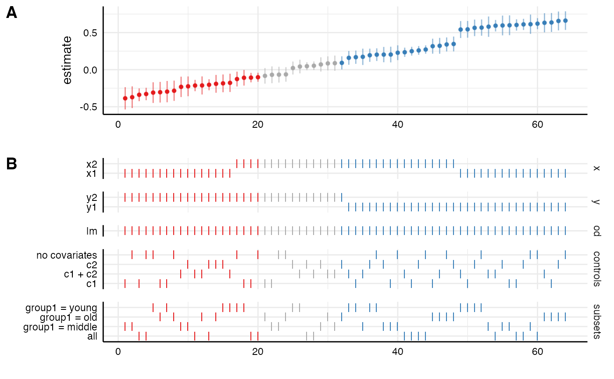
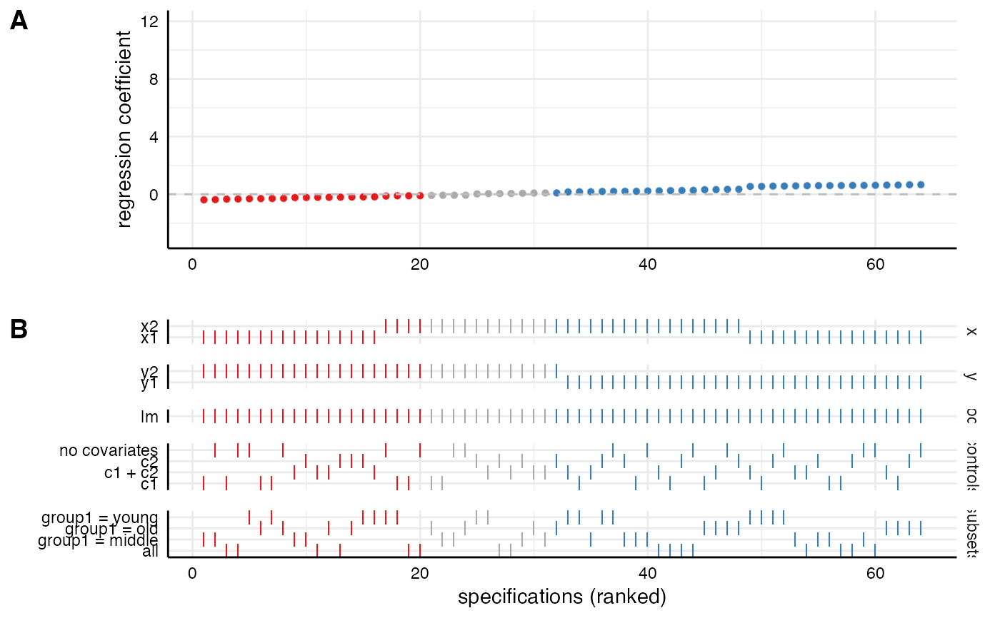

![[Deprecated]](figures/lifecycle-deprecated.svg) This function is deprecated because the new version of specr uses a new analytic framework.
In this framework, you can plot a similar figure simply by using the generic
This function is deprecated because the new version of specr uses a new analytic framework.
In this framework, you can plot a similar figure simply by using the generic plot()
function and adding the argument type = "default". This function plots an entire visualization of the specification curve analysis.
The function uses the entire tibble that is produced by
run_specs() to create a standard visualization of the specification curve analysis.
Alternatively, one can also pass two separately created ggplot objects
to the function. In this case, it simply combines them using cowplot::plot_grid.
Significant results are highlighted (negative = red, positive = blue, grey = nonsignificant).
Arguments
- df
a data frame resulting from
run_specs().- plot_a
a ggplot object resulting from
plot_curve()(orplot_choices()respectively).- plot_b
a ggplot object resulting from
plot_choices()(orplot_curve()respectively).- choices
a vector specifying which analytical choices should be plotted. By default, all choices are plotted.
- labels
labels for the two parts of the plot
- rel_heights
vector indicating the relative heights of the plot.
- desc
logical value indicating whether the curve should the arranged in a descending order. Defaults to FALSE.
- null
Indicate what value represents the 'null' hypothesis (defaults to zero).
- ci
logical value indicating whether confidence intervals should be plotted.
- ribbon
logical value indicating whether a ribbon instead should be plotted.
- ...
additional arguments that can be passed to
plot_grid().
Value
a ggplot object.
See also
plot_curve()to plot only the specification curve.plot_choices()to plot only the choices panel.plot_samplesizes()to plot a histogram of sample sizes per specification.
Examples
# load additional library
library(ggplot2) # for further customization of the plots
# run spec analysis
results <- run_specs(example_data,
y = c("y1", "y2"),
x = c("x1", "x2"),
model = "lm",
controls = c("c1", "c2"),
subsets = list(group1 = unique(example_data$group1)))
# plot results directly
plot_specs(results)
#> Warning: `plot_specs()` was deprecated in specr 1.0.0.
#> ℹ Please use `plot(<specr.object>)` instead.

# Customize each part and then combine
p1 <- plot_curve(results) +
geom_hline(yintercept = 0, linetype = "dashed", color = "grey") +
ylim(-3, 12) +
labs(x = "", y = "regression coefficient")
p2 <- plot_choices(results) +
labs(x = "specifications (ranked)")
plot_specs(plot_a = p1, # arguments must be called directly!
plot_b = p2,
rel_heights = c(2, 2))
